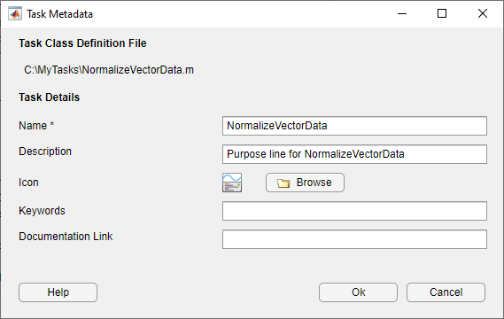
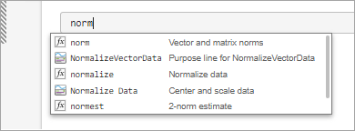
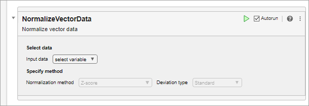
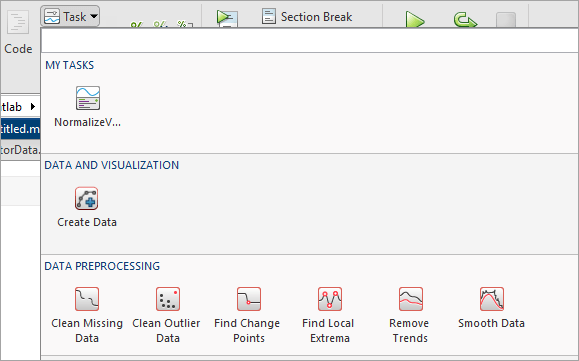

Live Editor Task Development Overview
Live Editor tasks are simple point-and-click interfaces that can be embedded into a live script to perform a specific set of operations. You can use tasks to explore parameters and automatically generate code in a live script. Tasks are useful because they can help reduce development time, errors, and time spent plotting.
MATLAB® provides a set of Live Editor tasks for use in live scripts. You also can create
your own Live Editor task by defining a subclass of the matlab.task.LiveTask
base class. Then, to make the task available in the Live Editor, configure the task using the
Task Metadata dialog box.
Define Live Editor Task Subclass
To create custom Live Editor task, first, define a subclass of the matlab.task.LiveTask base class by following these steps:
Create the Live Editor task subclass.
Define public and private properties.
Implement the
get.Summary,get.State, andset.Statemethods.Implement the
setup,generateCode, andresetmethods.Implement the
postExecutionUpdatemethod (optional).Emit a
StateChangedevent (optional).Set the
AutoRunproperty (optional).
Create Live Editor Task Subclass
To create a subclass of the matlab.task.LiveTask base class, on the Live Editor or
Editor tab, select New > Live Task Class. A new untitled file opens containing a template of a Live Editor Task
subclass. Replace the class name in the template code with the name of your Live Editor
task class. Then, save the file as a .m file with the same name as the
class.
classdef untitled < matlab.task.LiveTask % Add summary here % NOTE: To register/update your task, run matlab.task.configureMetadata % in command window. To de-register run matlab.task.removeMetadata % This class extends the base class LiveTask and provides the % implementation for all the abstract methods defined in the parent % class. properties(Access = private,Transient) % Declare UI elements here end properties(Dependent) % State property stores current state of UI objects in the task, specified as a struct. State % Task summary, specified as a string scalar or character vector. Summary end methods(Access = protected) function setup(task) % Method to set up the initial state of the task. % This method is called when the task is constructed. % Add your implementation here end end methods function [code,outputs] = generateCode(task) % Method to generate code and outputs for the task. % Construct code exclusively using information from this class. % Add your implementation here code = ""; outputs = {}; end function summary = get.Summary(task) % Define this method to get the Summary of the task. % This is used to dynamically generate the description of what the task does. summary = ""; end function state = get.State(task) % Used along with jsonencode for serialization of task state = struct; end function set.State(task,state) % Used along with jsondecode for task restoration end function reset(task) % This method is called when a user restores the default values % of the task by clicking the options button end end end
For example, to create a Live Editor task that normalizes vector data, replace class
name in the first line of the template code with NormalizeVectorData.
Then, save the file as
NormalizeVectorData.m.
classdef NormalizeVectorData < matlab.task.LiveTaskTo view the complete code for NormalizeVectorData, see NormalizeVectorData Class Definition.
Define Public and Private Properties
Define the properties for your class. In the private properties block, define
properties to store the implementation details of your class that you want to hide. These
properties store the underlying graphics and UI objects that make up your task, in
addition to any calculated values that you want to store. Eventually, your class will use
the data in the public properties to configure the underlying objects in the private
properties. Set the Transient attribute for the private block to avoid
storing redundant information if an instance of the task is saved.
In the public properties block, define the properties that the base class needs access
to, including the two required public properties State and
Summary. The State property stores the current
state of the task, and the Summary property stores a dynamic summary of
what the task does. Set the Dependent attribute for the public block to
avoid access issues with the get and set methods for the properties.
For example, define the public and private properties for the
NormalizeVectorData
class.
properties(Access = private,Transient) InputDataDropDown matlab.ui.control.DropDown MethodDropDown matlab.ui.control.DropDown ZscoreGrid matlab.ui.container.GridLayout ZscoreDropDown matlab.ui.control.DropDown end properties(Dependent) State Summary end
Implement get.Summary Method
Define the get.Summary method for your class to dynamically generate
the description of what the task does. The get.Summary method executes
when the value of the Summary property is requested. The returned
summary displays at the top of the task and remains visible when the task is
collapsed.
Define the method in a method block with no arguments so that it is called when
getting the value of the Summary property. The
get.Summary method returns the generated description as a character
array.
For example, implement the get.Summary method for the
NormalizeVectorData class. Use the selected normalizing method in the
MethodDropDown list and the selected input data in the
InputDataDropDown list to generate a dynamic summary based on the
current selection. If no input data is selected, set the summary to match the default
description defined in the liveTasks.json file. To display variable or
function names in monospaced font, surround them with backticks
(``).
function summary = get.Summary(task) if isequal(task.InputDataDropDown.Value,"select variable") summary = "Normalize vector data"; else switch task.MethodDropDown.Value case "zscore" methodString = " using z-score"; case "norm" methodString = " using 2-norm"; case "scale" methodString = " using scaling by standard deviation"; end summary = "Normalized vector `" + task.InputDataDropDown.Value + ... "`" + methodString; end end
Implement get.State and set.State Methods
Define the get.State and set.State methods for your
class to get and set the current state of the UI objects in the task. The Live Editor uses
these methods to restore a task to a specified state during copy, paste, undo, and redo
operations, as well as when the live script containing the task is closed and reopened.
The current state of the task is stored in a struct. When the live script is closed, the
Live Editor uses the jsonencode function to convert the struct
returned by get.State to JSON format and saves the encoded state with
the live script. When the live script is reopened, the Live Editor converts the encoded
state back to a struct, which is then used to set the current state of the task using
set.State. Refer to the jsonencode function for more information about the data types it
supports.
Define the methods in the same method block as the get.Summary method
so that they are called when setting or getting the value of the
State property. The get.State method returns a
struct containing the current value of each UI object in the task. The
set.State method takes a struct previously returned by the
get.State method and uses the struct to set the value of each UI object
in the task.
For example, implement the get.State and
set.State methods for the NormalizeVectorData
class. In the get.State method, create and return a struct with the
value of each DropDown object in the task.
function state = get.State(task) state = struct; state.InputDataDropDownValue = task.InputDataDropDown.Value; state.MethodDropDownValue = task.MethodDropDown.Value; state.ZscoreDropDownValue = task.ZscoreDropDown.Value; end
In the set.State method, use the values stored in the struct
that is passed in to set the value of each DropDown object in the
task.
function set.State(task,state) value = state.InputDataDropDownValue; if ~ismember(value, task.InputDataDropDown.ItemsData) task.InputDataDropDown.Items = [task.InputDataDropDown.Items value]; end task.InputDataDropDown.Value = value; task.MethodDropDown.Value = state.MethodDropDownValue; task.ZscoreDropDown.Value = state.ZscoreDropDownValue; updateComponents(task); end
Implement setup Method
Define the setup method
for your class. The setup method sets the initial state of the task and
executes once when MATLAB constructs the task. Define the setup method in a protected
block so that only your class can execute it.
Use the setup method to:
Create, layout, and configure the graphics and UI objects that make up the task.
Program the behavior of objects within the task.
Set the default values for the objects.
Note
All graphics and UI objects for the task must be added to the task's grid layout
manager, LayoutManager. If an object is added to the task directly,
MATLAB throws an error.
For example, implement the setup method for the
NormalizeVectorData class. In the setup method, call
the createComponents, setComponentsToDefault,
and updateComponents helper functions to create and arrange the
components in the task, set all the components to their default values, and update the
components.
function setup(task) createComponents(task); setComponentsToDefault(task); updateComponents(task); end
Create a private methods block and define the createComponents,
setComponentsToDefault, updateComponents, and
populateWSDropdownItems helper functions.
In the createComponents function, call the
uilabel, uigridlayout, and
uidropdown functions to create and arrange
Label, GridLayout, and DropDown
objects, specifying the task's LayoutManager as the parent. Store
those objects in the corresponding private properties. Specify the
updateComponents method as the ValueChangedFcn
callback that is called when the value of a drop-down list is changed. Specify the
populateWSDropdownItems method as the
DropDownOpeningFcn callback that is called when a drop-down list is
opened.
methods(Access = private) function createComponents(task) g = uigridlayout(task.LayoutManager,[1,1]); g.RowHeight = ["fit" "fit" "fit" "fit"]; g.ColumnWidth = "fit"; % Row 1: Select data section label uilabel(g,Text="Select data",FontWeight="bold"); % Row 2: Select data section components inputgrid = uigridlayout(g,RowHeight="fit", ... ColumnWidth=["fit","fit"],Padding=0); uilabel(inputgrid,Text="Input data"); task.InputDataDropDown = uidropdown(inputgrid, ... ValueChangedFcn=@task.updateComponents, ... DropDownOpeningFcn=@task.populateWSDropdownItems); task.populateWSDropdownItems(task.InputDataDropDown); % Row 3: Specify method section label uilabel(g,Text="Specify method",FontWeight="bold"); % Row 4: Method section components methodgrid = uigridlayout(g,RowHeight="fit", ... ColumnWidth=["fit","fit","fit"],Padding=0); uilabel(methodgrid,Text="Normalization method"); task.MethodDropDown = uidropdown(methodgrid, ... ValueChangedFcn=@task.updateComponents); task.MethodDropDown.Items = ["Z-score" "2-Norm" ... "Scale by standard deviation"]; task.MethodDropDown.ItemsData = ["zscore" "norm" "scale"]; % Subgrid 1 in method section task.ZscoreGrid = uigridlayout(methodgrid,RowHeight="fit", ... ColumnWidth=["fit","fit"],Padding=0); uilabel(task.ZscoreGrid,Text="Deviation type"); task.ZscoreDropDown = uidropdown(task.ZscoreGrid, ... ValueChangedFcn=@task.updateComponents, ... Items=["Standard" "Median absolute"], ... ItemsData=["std" "robust"], ... Tooltip="Center data to 0 and scale to deviation 1"); end function setComponentsToDefault(task) task.MethodDropDown.Value = "zscore"; task.ZscoreDropDown.Value = "std"; end function updateComponents(task,source,~) hasData = ~isequal(task.InputDataDropDown.Value,"select variable"); task.MethodDropDown.Enable = hasData; task.ZscoreDropDown.Enable = hasData; % Show only relevant subgrids task.ZscoreGrid.Visible = isequal(task.MethodDropDown.Value,"zscore"); % Trigger the Live Editor to update the generated script notify(task,"StateChanged"); end function populateWSDropdownItems(~,src,~) workspaceVariables = evalin("base","who"); src.Items = ["select variable"; workspaceVariables]; end end
Implement generateCode Method
Define the generateCode
method for your class to generate the MATLAB commands and output for the task. This method executes when the task state
changes, for example, when a user modifies a task parameter. The generated code displays
in the code section of the task. When the live script section containing the task runs,
the Live Editor uses the generated code to run the task. Define the
generateCode method in the same method block as the
get.Summary, get.State, and set.State
methods.
The generateCode method returns two output arguments,
code and outputs. code is
a character array or string array containing the generated code for the task.
outputs is a cell array containing the output variables produced by
the code. If the task does not generate output, return outputs as an
empty cell array.
Start the generated code with a comment that describes what the code is doing. For example,
% Normalize data.Surround variable names with backticks (
``) to identify variables to the Live Editor and prevent them from being renamed. If backticks are not added and the task has the same input and output variable name, then the input variable could get auto-incremented, which could result in errors.Minimize the amount of generated code by only including commands that set parameters to nondefault values. For example, this code checks whether the selected normalization method is the default method.
Optionally, separate out the plotting code and add it to the end of the generated code.
For example, implement the generateCode method for the
NormalizeVectorData class:
function [code,outputs] = generateCode(task) if isequal(task.InputDataDropDown.Value,"select variable") % Return empty values if there is not enough % information to generate code code = ""; outputs = {}; return end outputs = {'normalizedData'}; inputdata = "`" + task.InputDataDropDown.Value + "`"; if isequal(task.MethodDropDown.Value,"zscore") && ... isequal(task.ZscoreDropDown.Value,"std") code = "normalizedData = normalize(" + inputdata + ");"; elseif isequal(task.MethodDropDown.Value,"zscore") code = "normalizedData = normalize(" + inputdata + ... ",""zscore"",""" + task.ZscoreDropDown.Value + """);"; else code = "normalizedData = normalize(" + inputdata + ... ",""" + task.MethodDropDown.Value + """);"; end code = ["% Normalize data"; code]; end
Implement reset Method
Define the reset method
for your class to bring the task back to its default state. Define the method in the same
method block as the get.Summary, get.State,
set.State, and generateCode methods.
For example, implement the reset method for the
NormalizeVectorData class. Call the
setComponentsToDefault function to set all objects to their default
values. Then, call the updateComponents function to update all the
components.
function reset(task) setComponentsToDefault(task); updateComponents(task); end
Implement postExecutionUpdate Method (Optional)
Optionally, you can define a postExecutionUpdate method for your
class to perform specific updates for your task. This method executes after the generated
code for your task runs. For example, you can implement the
postExecutionUpdate method to add newly created variables to a
drop-down list used to select input data after the generated code for your task
runs.
Define the postExecutionUpdate method in the same method block as the
get.Summary, get.State, set.State,
generateCode, and reset methods. The
postExecutionUpdate method takes two inputs, an instance of the task,
and a struct containing the task outputs (returned by the generateCode
method) and their current workspace values.
function postExecutionUpdate(task,data) ... end
Emit StateChanged Event (Optional)
The Live Editor listens for changes in a task and calls the
generateCode method to update the task's generated code when it detects
a change. The Live Editor detects changes by monitoring the components in the task that
fire these events:
ValueChangedButtonPushedImageClickedSelectionChanged
To update the generated code for a task when changes occur outside of the events
listed (for example, in a component that does not fire these events), you can call the
notify method to fire the StateChanged event and
trigger a call to the generateCode method for the task.
notify(task,"StateChanged");
Note
The Live Editor does not monitor events for components that are created dynamically at run time.
Set AutoRun Property (Optional)
Optionally, you can set the AutoRun property for your class to
specify whether your task runs automatically when a user modifies the task parameters.
By default, the AutoRun property is set to true and the task runs
automatically after a change. To disable running your task automatically, set the
AutoRun property to false.
task.AutoRun = false;
You only need to set the AutoRun property once, preferably when
setting the initial state of the task. For example, set the AutoRun
property for the NormalizeVectorData class in the
setup method.
function setup(task) task.AutoRun = false; createComponents(task); setComponentsToDefault(task); updateComponents(task); end
Configure Live Editor Task Metadata
After creating the Live Editor task subclass, configure your task for use in the Live
Editor by using the matlab.task.configureMetadata function. The function opens the Task Metadata
dialog box. This dialog box allows you to specify metadata for the task. The Live Editor
then uses this metadata to display the task in the Live Editor task gallery as well as in
automatic code suggestions and completions.
Call the function by passing it the path to the class definition file for your task. If you do not specify a path, a file selection dialog box opens and prompts you to select a file.
For example, use the matlab.task.configureMetadata function to
configure the Normalize Vector Data task.
matlab.task.configureMetadata("NormalizeVectorData")The Task Metadata dialog box prepopulates all of the required task metadata details from your task class definition file.

You can edit the prepopulated metadata options using the Task Metadata dialog box. This table describes each individual task metadata option.
| Option | Summary |
|---|---|
| Name | Specify the name of the task to display in the autocompletion list and in the Live Editor task gallery. This detail is required. |
| Description | Specify the description of the task to display in the autocompletion list and in the Live Editor task gallery. This detail is optional. |
| Icon | Specify the path for the task icon to display in the Live Editor task gallery. If you specify a task icon, MATLAB copies it to the resources folder. This detail is optional. |
| Keywords | Specify the keywords that can be used to show the task in the autocompletion list. This detail is optional. |
| Documentation Link | Specify the documentation link as a URL to the documentation that opens when the task help icon is clicked. To specify a function that
returns a documentation link dynamically, include the text
If a documentation link is not specified, clicking the task help icon opens the generated help for the task in the system web browser. This detail is optional.
|

When you are done editing, click OK. MATLAB creates a folder named resources inside the folder
containing your task class definition file. Inside the resources folder,
MATLAB generates a file named liveTasks.json. This file contains
the metadata you provided in the Task Metadata dialog box, in addition to other metadata
MATLAB needs to make your task available in the Live Editor. Share this folder when
you share your Live Editor task.
Note
Do not modify the liveTasks.json file by hand. To change any Live
Editor task metadata, use the matlab.task.configureMetadata
function.
To make your task available in the Live Editor, add the folder containing your task
class definition file to the MATLAB path. To add the folder, use the addpath function or the Add Folder button in the Set
Path dialog box.
Note
You do not need to add the resources folder that is inside the
folder containing your task class definition file to the path. Folders named
resources are not allowed on the MATLAB path.
Use Custom Live Editor Task
To test whether your task creates correctly, create an instance of your class. For
example, create an instance of the NormalizeVectorData
class.
c = NormalizeVectorData;
MATLAB creates the Normalize Vector Data task.

To get all of the UI objects in the task, use the findall function.
h = findall(c.Parent)
h = 14×1 graphics array: Figure (NormalizeVectorData) GridLayout GridLayout Label (Select data) GridLayout Label (Specify method) GridLayout Label (Input data) DropDown (select variable) Label (Normalization method) DropDown (Z-score) GridLayout Label (Deviation type) DropDown (Standard)
To add your task to a live script, in the live script, type one of the keywords defined
in liveTasks.json and select your task from the list of suggested names.
For example, to add the Normalize Vector Data task to a live script, first, create a
live script. Then, on a code line, type norm. MATLAB shows a list of suggested matches.

Select Normalize Vector Data from the list. MATLAB adds the Normalize Vector Data task to the live script.

To add your task from the toolstrip, go to the Live Editor tab and
in the Code section, click Task
 . Select
. Select Normalize Vector Data to
add the Normalize Vector Data task to your live script. You must save the MATLAB path and restart MATLAB to include your task in the Live Editor task gallery.

NormalizeVectorData Class Definition
This code provides the complete contents of the NormalizeVectorData
class.
classdef NormalizeVectorData < matlab.task.LiveTask properties(Access = private,Transient) InputDataDropDown matlab.ui.control.DropDown MethodDropDown matlab.ui.control.DropDown ZscoreGrid matlab.ui.container.GridLayout ZscoreDropDown matlab.ui.control.DropDown end properties(Dependent) State Summary end methods(Access = protected) function setup(task) createComponents(task); setComponentsToDefault(task); updateComponents(task); end end methods(Access = private) function createComponents(task) g = uigridlayout(task.LayoutManager,[1,1]); g.RowHeight = ["fit" "fit" "fit" "fit"]; g.ColumnWidth = "fit"; % Row 1: Select data section label uilabel(g,Text="Select data",FontWeight="bold"); % Row 2: Select data section components inputgrid = uigridlayout(g,RowHeight="fit", ... ColumnWidth=["fit","fit"],Padding=0); uilabel(inputgrid,Text="Input data"); task.InputDataDropDown = uidropdown(inputgrid, ... ValueChangedFcn=@task.updateComponents, ... DropDownOpeningFcn=@task.populateWSDropdownItems); task.populateWSDropdownItems(task.InputDataDropDown); % Row 3: Specify method section label uilabel(g,Text="Specify method",FontWeight="bold"); % Row 4: Method section components methodgrid = uigridlayout(g,RowHeight="fit", ... ColumnWidth=["fit","fit","fit"],Padding=0); uilabel(methodgrid,Text="Normalization method"); task.MethodDropDown = uidropdown(methodgrid, ... ValueChangedFcn=@task.updateComponents); task.MethodDropDown.Items = ["Z-score" "2-Norm" ... "Scale by standard deviation"]; task.MethodDropDown.ItemsData = ["zscore" "norm" "scale"]; % Subgrid 1 in method section task.ZscoreGrid = uigridlayout(methodgrid,RowHeight="fit", ... ColumnWidth=["fit","fit"],Padding=0); uilabel(task.ZscoreGrid,Text="Deviation type"); task.ZscoreDropDown = uidropdown(task.ZscoreGrid, ... ValueChangedFcn=@task.updateComponents, ... Items=["Standard" "Median absolute"], ... ItemsData=["std" "robust"], ... Tooltip="Center data to 0 and scale to deviation 1"); end function setComponentsToDefault(task) task.MethodDropDown.Value = "zscore"; task.ZscoreDropDown.Value = "std"; end function updateComponents(task,~,~) hasData = ~isequal(task.InputDataDropDown.Value,"select variable"); task.MethodDropDown.Enable = hasData; task.ZscoreDropDown.Enable = hasData; % Show only relevant subgrids task.ZscoreGrid.Visible = isequal(task.MethodDropDown.Value,"zscore"); % Trigger the Live Editor to update the generated script notify(task,"StateChanged"); end function populateWSDropdownItems(~,src,~) workspaceVariables = evalin("base","who"); src.Items = ["select variable"; workspaceVariables]; end end methods function [code,outputs] = generateCode(task) if isequal(task.InputDataDropDown.Value,"select variable") % Return empty values if there is not enough % information to generate code code = ""; outputs = {}; return end outputs = {'normalizedData'}; inputdata = "`" + task.InputDataDropDown.Value + "`"; if isequal(task.MethodDropDown.Value,"zscore") && ... isequal(task.ZscoreDropDown.Value,"std") code = "normalizedData = normalize(" + inputdata + ");"; elseif isequal(task.MethodDropDown.Value,"zscore") code = "normalizedData = normalize(" + inputdata + ... ",""zscore"",""" + task.ZscoreDropDown.Value + """);"; else code = "normalizedData = normalize(" + inputdata + ... ",""" + task.MethodDropDown.Value + """);"; end code = ["% Normalize data"; code]; end function summary = get.Summary(task) if isequal(task.InputDataDropDown.Value,"select variable") summary = "Normalize vector data"; else switch task.MethodDropDown.Value case "zscore" methodString = " using z-score"; case "norm" methodString = " using 2-norm"; case "scale" methodString = " using scaling by standard deviation"; end summary = "Normalized vector `" + task.InputDataDropDown.Value + ... "`" + methodString; end end function state = get.State(task) state = struct; state.InputDataDropDownValue = task.InputDataDropDown.Value; state.MethodDropDownValue = task.MethodDropDown.Value; state.ZscoreDropDownValue = task.ZscoreDropDown.Value; end function set.State(task,state) value = state.InputDataDropDownValue; if ~ismember(value, task.InputDataDropDown.ItemsData) task.InputDataDropDown.Items = [task.InputDataDropDown.Items value]; end task.InputDataDropDown.Value = value; task.MethodDropDown.Value = state.MethodDropDownValue; task.ZscoreDropDown.Value = state.ZscoreDropDownValue; updateComponents(task); end function reset(task) setComponentsToDefault(task); updateComponents(task); end end end
See Also
matlab.task.LiveTask | setup | generateCode | reset